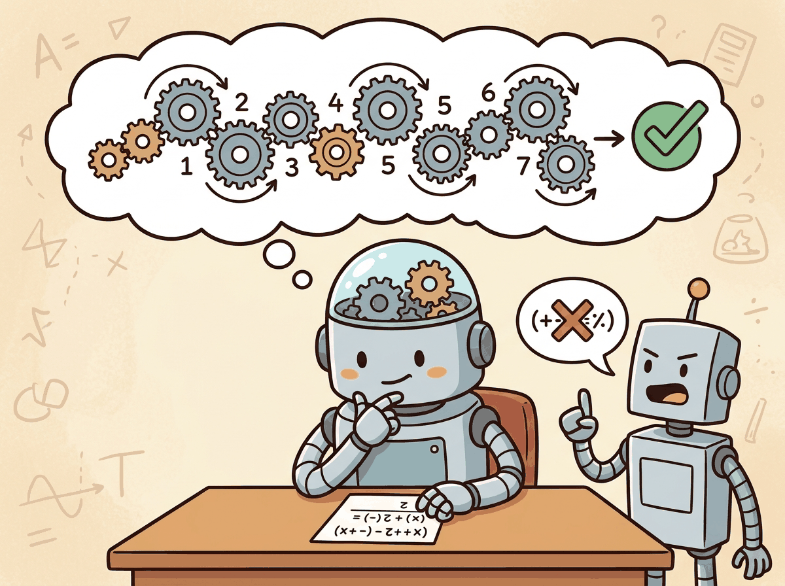
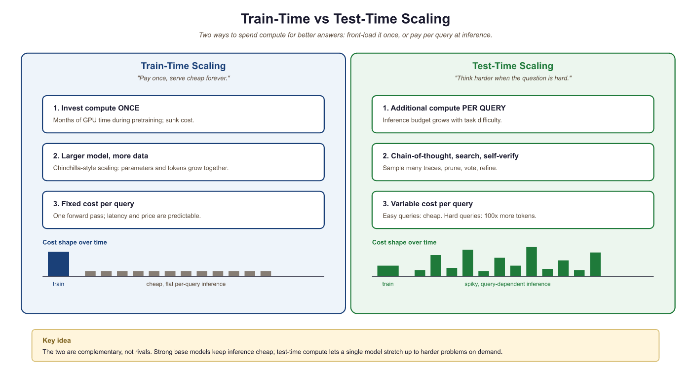
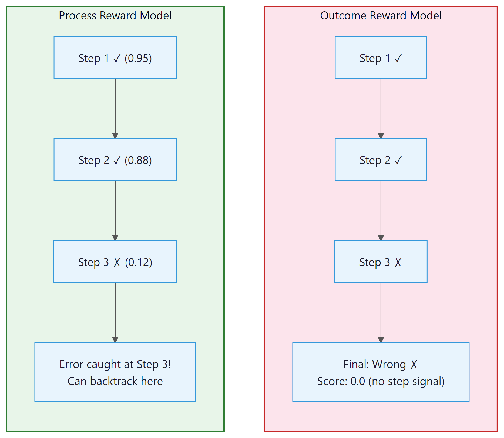
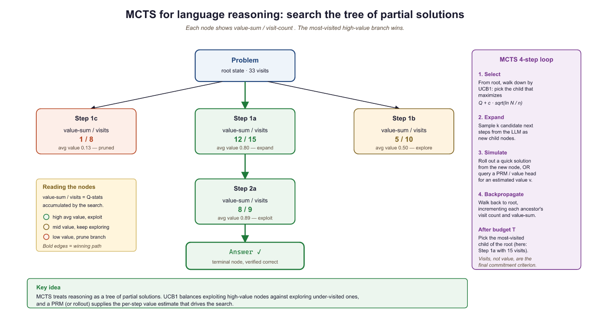

Thinking longer before answering is advice we give to students and, apparently, also to language models. The difference is that when a model thinks harder, it costs you actual money per second.
Bert, Billable Thinker AI Agent
Prerequisites
This section assumes familiarity with scaling laws from Section 6.3 and Section 17.1/alignment concepts from Section 6.1. Understanding of decoding strategies from Section 5.2 (sampling, temperature) helps with the inference-time scaling discussion.
The paradigm shift from train-time to test-time compute. For years, the dominant strategy for improving LLM performance was to scale up training: more parameters, more data, more GPU hours. A new paradigm has emerged that invests additional compute at inference time instead. Rather than building a larger model, you let the same model "think longer" on each problem. OpenAI's o1/o3, Google's Gemini "thinking" mode, and DeepSeek-R1 all embody this approach. The results are striking: on challenging math and coding benchmarks, test-time compute scaling can outperform models that are orders of magnitude larger. This section explores the techniques that make this possible and the economic trade-offs that determine when to think harder versus when to use a bigger model. The scaling laws from Section 6.3 provide the baseline that test-time compute scaling aims to surpass.
7.3.1 Inference-Time Scaling: A New Scaling Law
The deep treatment of reasoning models and test-time compute lives in Chapter 8. The discussion below focuses on a landscape-level overview only.

Classical train-time scaling laws (Kaplan 2020, Chinchilla 2022; see Section 6.3) hold model capability fixed after training. Inference-time scaling adds a complementary dimension: instead of a single forward pass per query, the model performs multiple reasoning steps, generates several candidate solutions, or searches a tree of possibilities. The new insight is that some problems benefit far more from additional thinking than from additional parameters.
Consider a math competition problem. A 7B model with 100 attempts and a good verifier can outperform a 70B model with a single attempt. The 7B model's "effective capability" scales with the compute invested at inference time. This creates a new trade-off axis: for the same total compute budget, you can choose between a large model with few attempts or a small model with many attempts.
Research from DeepMind and others has formalized this as a compute-optimal inference problem. Given a fixed inference compute budget $C$, what combination of model size $N$ and test-time compute $T$ maximizes performance? The answer depends on task difficulty: easy tasks favor a single pass through a large model, while hard tasks favor repeated attempts with verification.
Who: A senior engineer at an accounting software company building an automated tax regulation interpreter.
Situation: The system needed to read new tax code amendments and determine how they affected existing deduction calculations, a task requiring multi-step logical reasoning across interconnected legal definitions.
Problem: Standard LLMs (GPT-4o, Claude 3.5 Sonnet) achieved only 62% accuracy on their benchmark of 200 tax regulation interpretation questions, often failing on cases requiring three or more reasoning steps.
Dilemma: Fine-tuning on tax data improved accuracy to 74% but plateaued. The team considered hiring more tax attorneys to manually code rules versus trying the new reasoning models (o1/o3) which cost 5x to 15x more per query.
Decision: They adopted o3-mini for complex multi-step questions (identified by a difficulty classifier) while routing simple lookups to GPT-4o-mini, balancing cost with accuracy.
How: A lightweight classifier (fine-tuned on question complexity labels) routed each query to the appropriate model. Complex questions (estimated 3+ reasoning steps) went to o3-mini; simple questions went to GPT-4o-mini.
Result: Overall accuracy rose to 89% (o3-mini alone achieved 91% on complex questions). The routing strategy kept average cost per query at \$0.04, versus \$0.12 if o3-mini handled everything. The system replaced 60% of manual attorney review time.
Lesson: Reasoning models shine on tasks requiring multi-step logic but are overkill for simple queries. A difficulty-based routing layer lets you capture the accuracy gains where they matter while controlling costs.

7.3.2 Chain-of-Thought at Scale: o1/o3 and DeepSeek-R1
Reasoning models can spend thousands of tokens "thinking" before producing a short answer. It is not uncommon for o1 to write a multi-page internal monologue to answer a single math problem. If humans worked this way, every exam would come with a requirement to turn in your scratch paper too.
Chain-of-thought (CoT) prompting, introduced by Wei et al. (2022), showed that asking a model to "think step by step" improves performance on reasoning tasks. The reasoning model paradigm takes this idea to its extreme: instead of relying on a prompt to elicit reasoning, the model is trained to produce extended chains of thought as a fundamental part of its generation process.
7.3.2.1 OpenAI o1 and o3
OpenAI's o1 (released September 2024) was the first production reasoning model. Rather than immediately generating an answer, o1 produces a long internal chain of thought that can span hundreds or thousands of tokens. This chain of thought is hidden from the user; only the final answer is displayed. The key elements of the o1 approach include:
- Reinforcement learning for reasoning: The model is trained with RL (building on the RLHF techniques from Section 17.1) to produce reasoning chains that lead to correct answers. The reward signal comes from verifying final answers against known solutions (for math and code) or from learned reward models (for open-ended tasks).
- Reasoning tokens: The model generates special "thinking" tokens that are not shown to the user. These tokens allow the model to explore different approaches, catch its own mistakes, and verify intermediate steps before committing to an answer.
- Adaptive compute: Harder problems naturally elicit longer chains of thought. A simple arithmetic question might require 50 reasoning tokens, while a complex proof might use 10,000+. The model allocates compute proportional to difficulty without explicit programming. This adaptive behavior is central to the agentic workflows covered later in the book.
The successor model, o3 (released early 2025), demonstrated even more striking performance. On the ARC-AGI benchmark (a test of novel abstract reasoning), o3 achieved scores previously thought to require fundamental architectural breakthroughs, using only test-time compute scaling on top of a transformer backbone.
7.3.2.2 DeepSeek-R1: Open Reasoning
DeepSeek-R1, released in January 2025, brought open-weight reasoning models to the community. The training pipeline is notable for its simplicity and its revelations about emergent reasoning behavior:
- Cold start with pure RL (R1-Zero): DeepSeek first trained a model called R1-Zero using only reinforcement learning on the base DeepSeek-V3 model, with no supervised fine-tuning on reasoning traces. The model was given math problems and rewarded based on answer correctness. Remarkably, the model spontaneously developed reasoning behaviors: it learned to break problems into steps, verify its own work, and explore alternative approaches.
- Supervised fine-tuning on curated reasoning: To improve readability and consistency, DeepSeek then collected high-quality reasoning traces (both from R1-Zero and from human annotators) and performed supervised fine-tuning.
- Final RL stage: A second round of reinforcement learning further improved accuracy and alignment.
Key Insight: Reasoning from pure RL, zero human examples. DeepSeek-R1-Zero demonstrates that a language model trained with only reinforcement learning (no supervised chain-of-thought examples) spontaneously discovers structured reasoning behaviors, including self-verification and backtracking. This is arguably the most scientifically surprising finding in recent LLM research: complex reasoning can emerge from reward signals alone.
7.3.2.1 GRPO: The Algorithm Behind R1
The reinforcement learning algorithm that enabled R1's emergent reasoning is Group Relative Policy Optimization (GRPO). Unlike standard RLHF which trains a separate value (critic) model, GRPO eliminates the critic entirely. Instead, for each prompt, the model generates a group of $G$ candidate responses. Each response receives a reward score (e.g., whether the math answer is correct). The policy gradient is then computed using relative advantage: responses that score above the group mean receive positive updates, and those below receive negative updates.
Formally, for a group of $G$ responses to the same prompt, GRPO computes the advantage for each response $i$ as:
This approach has two key advantages: (1) it eliminates the need to train and maintain a separate value model, which for large LLMs would require significant additional memory and compute, and (2) the relative comparison within a group naturally normalizes the reward signal, making training more stable across problems of varying difficulty. GRPO is the reason DeepSeek was able to train R1 at a fraction of the cost that would be required for standard PPO with a full critic model.
The DeepSeek R1 paper is notable for both its technical contributions and its transparency. It demonstrates that (1) reasoning emerges from pure RL without supervised examples, (2) GRPO provides an efficient alternative to PPO for LLM training, and (3) reasoning can be distilled into models as small as 1.5B parameters. The distilled model family provides an unprecedented opportunity: reasoning-capable models that run on consumer hardware, trained using methods that are fully documented and reproducible.
7.3.2.3 Distilling Reasoning into Smaller Models
One of the most practical contributions of DeepSeek-R1 was demonstrating that reasoning capabilities can be distilled into much smaller models. By using R1's reasoning traces as training data, the team created distilled versions at 1.5B, 7B, 8B, 14B, 32B, and 70B parameters. Even the 7B distilled model showed substantial improvements on math reasoning benchmarks compared to the base model of the same size. This makes reasoning-enhanced models practical for local deployment. The distillation techniques used here are explored in detail in Section 16.5.
Resource requirements: The DeepSeek-R1-Distill-Qwen-7B model requires approximately 14 GB of disk space (BF16 weights) and at least 16 GB of GPU memory for inference. On first run, the model will be downloaded from Hugging Face Hub.
# Using a distilled reasoning model via Hugging Face
from transformers import AutoTokenizer, AutoModelForCausalLM
import torch
model_name = "deepseek-ai/DeepSeek-R1-Distill-Qwen-7B"
# Load tokenizer with vocabulary matching the model
tokenizer = AutoTokenizer.from_pretrained(model_name)
# Load pretrained causal LM (decoder-only architecture)
model = AutoModelForCausalLM.from_pretrained(
model_name,
torch_dtype=torch.bfloat16,
device_map="auto",
)
# The model naturally produces chain-of-thought reasoning
prompt = """A farmer has 17 sheep. All but 9 run away. How many sheep
does the farmer have left? Let me think through this carefully."""
# Tokenize text and convert to model-ready tensors
inputs = tokenizer(prompt, return_tensors="pt").to(model.device)
output = model.generate(
**inputs,
max_new_tokens=512,
temperature=0.6,
do_sample=True,
)
print(tokenizer.decode(output[0], skip_special_tokens=True))Input: problem x, generator M, reward model R, sample count N, temperature T
Output: highest-scoring solution y*
candidates = []
for i = 1 to N:
yi = M.generate(x, temperature=T, do_sample=True)
ri = R.score(x, yi)
candidates.append((yi, ri))
// Select the candidate with the highest reward
y* = argmax(y, r) ∈ candidates r
return y*
7.3.3 Process Reward Models vs. Outcome Reward Models
A critical component of test-time compute scaling is the reward model that evaluates generated solutions. There are two fundamentally different approaches to providing reward signal for reasoning tasks.
7.3.3.1 Outcome Reward Models (ORMs)
An ORM evaluates only the final answer. Given a problem and a complete solution, the ORM assigns a score based on whether the answer is correct. ORMs are simple to train (you only need problem-answer pairs) but provide sparse feedback. A long chain of reasoning that makes one error in step 3 of 20 receives the same low score as a chain that is wrong from the first step. The model cannot learn which specific step went wrong.
7.3.3.2 Process Reward Models (PRMs)
A PRM evaluates each step of a reasoning chain individually. After each step, the PRM assigns a score indicating whether that step is logically valid, regardless of the final answer. This provides dense, step-level feedback that enables much more efficient search and training.
OpenAI's research on PRMs (published in "Let's Verify Step by Step," 2023) demonstrated that process supervision significantly outperforms outcome supervision for math reasoning. When used to select among multiple solution attempts (best-of-N), a PRM-guided approach solves substantially more problems than an ORM-guided approach with the same compute budget.

7.3.3.3 Training a Process Reward Model
Training a PRM requires step-level labels, which are more expensive to collect than outcome labels. There are several strategies:
- Human annotation: Mathematicians label each reasoning step as correct or incorrect (expensive but high quality)
- Monte Carlo estimation: For each partial solution up to step $k$, sample many completions and estimate step correctness based on the fraction that lead to a correct final answer
- Automated verification: For domains with formal verification (math, code), steps can be checked automatically using symbolic solvers or test suites
# Conceptual: Monte Carlo estimation for PRM training data
import numpy as np
def estimate_step_correctness(model, problem, partial_solution, n_completions=64):
"""
Estimate correctness of a partial solution by sampling completions.
If many completions from this point reach the right answer,
the steps so far are likely correct.
"""
correct_count = 0
for _ in range(n_completions):
# Sample a completion from this partial solution
completion = model.generate(
prompt=problem + partial_solution,
temperature=0.8,
max_tokens=512,
)
# Check if the final answer is correct
if verify_answer(problem, completion):
correct_count += 1
# Step correctness ~ fraction of completions that succeed
return correct_count / n_completions
# Build PRM training data for a multi-step solution
def build_prm_labels(model, problem, solution_steps, ground_truth):
labels = []
for k in range(1, len(solution_steps) + 1):
partial = "\n".join(solution_steps[:k])
score = estimate_step_correctness(model, problem, partial)
labels.append({
"step": k,
"text": solution_steps[k - 1],
"correctness_score": score,
})
return labels7.3.4 Best-of-N Sampling with Reward-Guided Selection
The simplest form of test-time compute scaling is best-of-N sampling: generate $N$ independent solutions to a problem, score each with a reward model, and return the highest-scoring solution. Despite its simplicity, this approach is surprisingly effective.
7.3.4.1 The Mechanics
Given a problem $x$, a language model $M$, and a reward model $R$:
- Sample $N$ candidate solutions: $y_1, y_2, ..., y_N ~ M(x)$
- Score each candidate: $r_i = R(x, y_i)$
- Return the best: $y* = argmax_i r_i$
The performance of best-of-N scales logarithmically with $N$. Doubling the number of samples provides a diminishing but consistent improvement. For math reasoning with a good PRM, going from N=1 to N=64 can improve accuracy from roughly 50% to 80% on challenging benchmarks.
# Compute-optimal inference: choosing strategy based on difficulty
def compute_optimal_inference(
problem,
easy_model, # Small, fast model (e.g., 8B)
hard_model, # Large, expensive model (e.g., 70B)
reward_model, # For scoring candidate solutions
difficulty_estimator, # Predicts problem difficulty
):
"""
Route to different inference strategies based on
estimated problem difficulty.
"""
difficulty = difficulty_estimator(problem)
if difficulty < 0.3:
# Easy: single pass with the small model is sufficient
return generate_single(easy_model, problem)
elif difficulty < 0.7:
# Medium: best-of-N with small model
candidates = [
generate_single(easy_model, problem)
for _ in range(16)
]
scores = [reward_model.score(problem, c) for c in candidates]
return candidates[scores.index(max(scores))]
elif difficulty < 0.9:
# Hard: best-of-N with large model
candidates = [
generate_single(hard_model, problem)
for _ in range(8)
]
scores = [reward_model.score(problem, c) for c in candidates]
return candidates[scores.index(max(scores))]
else:
# Very hard: tree search with large model
return mcts_search(hard_model, reward_model, problem,
n_iterations=200)
# Best-of-N sampling with reward model scoring
import torch
from transformers import AutoModelForSequenceClassification
def best_of_n(
generator_model,
reward_model,
tokenizer,
problem: str,
n: int = 16,
temperature: float = 0.7,
):
"""
Generate N candidate solutions, score with reward model,
return the highest-scoring one.
"""
candidates = []
# Step 1: Generate N diverse solutions
for i in range(n):
inputs = tokenizer(problem, return_tensors="pt").to(
generator_model.device
)
output = generator_model.generate(
**inputs,
max_new_tokens=1024,
temperature=temperature,
do_sample=True,
top_p=0.95,
)
solution = tokenizer.decode(
output[0][inputs["input_ids"].shape[1]:],
skip_special_tokens=True,
)
candidates.append(solution)
# Step 2: Score each candidate with the reward model
scores = []
for solution in candidates:
reward_input = tokenizer(
f"Problem: {problem}\nSolution: {solution}",
return_tensors="pt",
truncation=True,
max_length=2048,
).to(reward_model.device)
with torch.no_grad():
reward = reward_model(**reward_input).logits.squeeze()
scores.append(reward.item())
# Step 3: Return the best candidate
best_idx = max(range(n), key=lambda i: scores[i])
return candidates[best_idx], scores[best_idx]
# Example usage
# best_solution, score = best_of_n(
# generator, reward_model, tokenizer,
# "Prove that the square root of 2 is irrational.",
# n=32
# )Best-of-N is embarrassingly parallel: all N candidates can be generated simultaneously if you have the GPU capacity. However, the total compute scales linearly with N while the benefit scales logarithmically. For production systems, values of N between 8 and 64 typically provide the best cost-benefit ratio. Beyond N=256, the marginal improvement rarely justifies the cost.
7.3.5 Monte Carlo Tree Search for Language
While best-of-N treats each solution as an independent sample, tree search methods structure the generation process as an explicit search over a tree of partial solutions. Each node represents a partial solution (reasoning up to step $k$), and edges represent possible next steps. This allows the search to prune unpromising branches early and focus compute on the most promising directions.
7.3.5.1 MCTS Fundamentals for Language
Monte Carlo Tree Search (MCTS), famously used in AlphaGo, operates in four phases that repeat iteratively:
- Selection: Starting from the root, traverse the tree by selecting the child node with the highest UCB (Upper Confidence Bound) score, which balances exploitation (high reward) with exploration (less visited nodes)
- Expansion: At a leaf node, generate one or more new child nodes by sampling possible next reasoning steps from the language model
- Simulation (rollout): From the new node, complete the solution to the end (using fast, possibly lower-quality generation) and evaluate the outcome
- Backpropagation: Update the visit counts and value estimates for all nodes along the path from root to the expanded node
where $V$ is the cumulative value, $N$ is the visit count, and $c$ is an exploration constant.

7.3.5.2 LATS: Language Agent Tree Search
LATS (Language Agent Tree Search) adapts MCTS specifically for LLM reasoning. The key modifications for the language domain include:
- LLM as policy and value function: Instead of a separately trained value network (as in AlphaGo), LATS uses the LLM itself to both generate candidate steps (policy) and evaluate partial solutions (value). This avoids the need for separate value model training.
- Natural language state representation: Each tree node contains the reasoning text so far, making it possible to leverage the full context window of the LLM for each expansion.
- Reflection-based backpropagation: When a rollout fails, the LLM generates a reflection on what went wrong, and this information is stored in the tree to guide future expansions away from similar errors.
7.3.5.3 AlphaProof and Mathematical Reasoning
Google DeepMind's AlphaProof (2024) applied tree search to formal mathematical theorem proving. The system combines a language model (to propose proof steps in Lean 4) with MCTS (to search over the proof tree). AlphaProof solved four of six problems from the 2024 International Mathematical Olympiad, achieving a silver medal equivalent. This represents the strongest result to date in automated mathematical reasoning and demonstrates the power of combining language models with structured search.
7.3.6 Compute-Optimal Inference
The central practical question for test-time compute is: when should you think longer versus use a bigger model? Research from Snell et al. (2024) provides a framework for answering this question.
| Task Difficulty | Optimal Strategy | Rationale |
|---|---|---|
| Easy (model already >90% accurate) | Single pass, larger model | Test-time compute has diminishing returns; most samples are already correct |
| Medium (50-90% accuracy) | Best-of-N with moderate N | Sampling diversity helps; N=8 to 32 is typically sufficient |
| Hard (<50% accuracy) | Tree search or heavy best-of-N | Structured search can find solutions in a vast space; N=64+ or MCTS |
| Beyond model capability | Larger model required | No amount of test-time compute helps if the model lacks necessary knowledge |
A smaller model with test-time compute scaling can match the performance of a 14x larger model on hard reasoning tasks. For example, a Llama 8B with best-of-N (N=256) and a PRM verifier can match Llama 70B on GSM8K math problems, while using similar total FLOPs. The key requirement is a good verifier: without a reliable reward model, additional sampling does not help because you cannot distinguish good solutions from bad ones.
Extended chain-of-thought reasoning has a dual relationship with hallucination. On one hand, visible reasoning traces make errors more transparent: a user can inspect the chain and identify where the logic went wrong. On the other hand, long reasoning chains can make hallucinations more convincing: a model that produces a coherent, step-by-step argument for an incorrect conclusion is harder to fact-check than one that simply states a wrong answer. This is sometimes called "faithful but wrong" reasoning. Practitioners should treat extended reasoning traces as evidence that requires verification, not as proof of correctness.
# Compute-optimal inference: spend more tokens on harder problems.
# Cheap classifier picks the strategy; expensive strategy only fires when justified.
from openai import OpenAI
client = OpenAI()
def estimate_difficulty(prompt: str) -> float:
"""Lightweight call to a small model to score 0.0-1.0 difficulty."""
resp = client.chat.completions.create(
model="gpt-4o-mini",
messages=[
{"role": "system", "content": "Rate task difficulty 0.0 (trivial) to 1.0 (very hard). Return ONLY a float."},
{"role": "user", "content": prompt},
],
temperature=0.0,
max_tokens=4,
)
try:
return float(resp.choices[0].message.content.strip())
except ValueError:
return 0.5
def answer(prompt: str) -> str:
"""Cheap path for easy questions; chain-of-thought + self-consistency for hard ones."""
difficulty = estimate_difficulty(prompt)
if difficulty < 0.3:
# Greedy, single shot
return client.chat.completions.create(
model="gpt-4o-mini",
messages=[{"role": "user", "content": prompt}],
temperature=0.0,
).choices[0].message.content
# Reasoning model with explicit chain-of-thought
return client.chat.completions.create(
model="o4-mini",
messages=[{"role": "user", "content": prompt + "\nThink step by step."}],
).choices[0].message.content
print(answer("What is 2 + 2?"))
print(answer("Prove that there are infinitely many primes."))7.3.7 Lab: Implementing Best-of-N with a Reward Model
In this lab exercise, we implement best-of-N sampling for math reasoning and measure how accuracy scales with the number of samples.
# Lab: Measure accuracy vs. N on GSM8K math problems
import json
import re
import random
def extract_answer(text):
"""Extract the final numerical answer from a solution."""
# Look for patterns like "the answer is 42" or "#### 42"
patterns = [
r"####\s*(-?[\d,]+)",
r"answer\s+is\s+(-?[\d,]+)",
r"=\s*(-?[\d,]+)\s*$",
]
for pattern in patterns:
match = re.search(pattern, text, re.IGNORECASE | re.MULTILINE)
if match:
return match.group(1).replace(",", "")
return None
def evaluate_best_of_n(model, tokenizer, problems, ns=[1, 4, 8, 16, 32, 64]):
"""
Evaluate best-of-N at various N values.
Uses majority voting as a simple reward signal.
"""
results = {n: 0 for n in ns}
max_n = max(ns)
for problem in problems:
ground_truth = problem["answer"]
# Generate max_n solutions
solutions = []
for _ in range(max_n):
prompt = f"Solve step by step:\n{problem['question']}\n\n"
output = model.generate(prompt, temperature=0.7)
answer = extract_answer(output)
solutions.append(answer)
# Evaluate for each N using majority voting
for n in ns:
subset = solutions[:n]
# Majority vote among the N samples
vote_counts = {}
for ans in subset:
if ans is not None:
vote_counts[ans] = vote_counts.get(ans, 0) + 1
if vote_counts:
majority = max(vote_counts, key=vote_counts.get)
if majority == ground_truth:
results[n] += 1
# Convert to accuracy
total = len(problems)
for n in ns:
accuracy = results[n] / total * 100
print(f"N={n:3d}: {accuracy:.1f}% accuracy")
return results
# Expected output (illustrative):
# N= 1: 52.3% accuracy
# N= 4: 64.1% accuracy
# N= 8: 70.5% accuracy
# N= 16: 75.8% accuracy
# N= 32: 79.2% accuracy
# N= 64: 81.6% accuracyThe lab above uses majority voting (selecting the most common answer among N candidates) as a simple verification strategy. This works well when the model is more likely to produce the correct answer than any specific wrong answer. For harder problems, a trained reward model (ORM or PRM) provides significantly better selection. The accuracy gains from N=1 to N=64 would be even larger with PRM-guided selection.
Show Answer
Show Answer
Show Answer
Show Answer
Show Answer
Every reputable model release includes a model card documenting known limitations, evaluation results, and intended use cases. Spending 10 minutes reading it can save you weeks of debugging edge cases the authors already discovered.
Test-time compute scaling introduces an economic dimension to AI inference that mirrors human cognition. Daniel Kahneman's System 1 (fast, automatic) and System 2 (slow, deliberate) thinking map directly onto the choice between a single forward pass and extended chain-of-thought reasoning. Just as humans allocate more cognitive effort to harder problems, test-time compute scaling allocates more GPU cycles to harder queries. This creates a cost-difficulty curve: easy questions are cheap, hard questions are expensive. The practical implication is that inference cost is no longer fixed per query but variable, requiring new pricing models, capacity planning, and routing strategies. The process reward model (PRM) that guides this allocation is itself a form of metacognition: a system that evaluates how well the primary system is thinking, echoing the monitoring function that cognitive psychologists attribute to the prefrontal cortex.
Key Takeaways
- Test-time compute scaling is a new paradigm complementing train-time scaling. Instead of building larger models, you let the same model think longer on harder problems, allocating compute proportional to difficulty.
- Reasoning models (o1/o3, DeepSeek-R1) are trained with reinforcement learning to produce extended chains of thought. DeepSeek-R1-Zero showed that this reasoning behavior can emerge from pure RL without any supervised reasoning examples.
- Process Reward Models (PRMs) provide step-level feedback that significantly outperforms outcome-only reward models (ORMs) for guiding search and selection in reasoning tasks.
- Best-of-N sampling is the simplest test-time scaling method: generate N candidates and select the best. Performance scales logarithmically with N, and the approach is embarrassingly parallel.
- Monte Carlo Tree Search (MCTS) brings structured search to language generation, enabling focused exploration of promising reasoning paths while pruning dead ends. LATS and AlphaProof demonstrate the power of this approach.
- Compute-optimal inference depends on task difficulty. Easy tasks favor a single pass through a large model; hard tasks favor many attempts with a smaller model and a good verifier. A smaller model with test-time compute can match a 14x larger model on hard reasoning tasks.
What comes next: Having surveyed the cutting-edge reasoning capabilities of modern LLMs, we now ask a critical question: who benefits from these advances? Section 7.4 examines the multilingual landscape, revealing how tokenizer design, training data composition, and evaluation methodology determine whether 6.5 billion non-English speakers receive equitable access to language model capabilities.
Exercises
OpenAI's o1 spends seconds to minutes "thinking" before answering, generating long internal chains of reasoning. (a) Why does this approach beat plain GPT-4 on competition math but lose on simple chat tasks? (b) What is the theoretical principle that justifies "more inference compute at the same model" working at all? (c) What is the unit-economics implication for an LLM product?
Answer Sketch
(a) Hard reasoning problems benefit from search and self-verification: many candidate reasoning paths must be explored and bad ones discarded. Simple chat is bottlenecked by latency and tone, not by the depth of reasoning, so spending 30 seconds adds only cost. (b) The principle: a fixed model defines a distribution over outputs, but an external selector (reward model, verifier, majority vote) can pick from many samples to produce a better-than-mean answer. As long as the verifier is cheaper or more accurate than the generator, scaling inference samples increases quality. (c) Unit economics flip: per-task cost is no longer dominated by a fixed inference call. You must price reasoning queries differently and route only the genuinely hard ones to long-thinking modes; otherwise margins collapse.
You sample N candidate answers from your model and pick the best with a reward model. Suppose pass@1 = 30% and pass@N grows roughly as $1 - (1 - p)^N$. (a) What is pass@8? (b) What is pass@64? (c) Compute the per-correct-answer cost ratio of N=64 vs N=8 if reward-model selection is perfect.
Answer Sketch
(a) pass@8 = 1 - 0.7^8 = 1 - 0.0576 = 0.942 (~94%). (b) pass@64 = 1 - 0.7^64 ~= 1 - 1.6e-10 ~= 1.0. (c) N=64 costs 8x more inference. With a perfect verifier, accuracy gain is 1.0/0.942 = 1.06x; cost per correct answer is 8/1.06 = ~7.5x worse. This shows the diminishing-returns law: most of the lift from sampling comes between N=1 and N=8; beyond that, you pay near-linearly more for marginal gain. In practice the verifier is imperfect, so the optimal N is often 4-16, not 64.
You want to add self-consistency (majority voting over N samples) to a chain-of-thought pipeline. Sketch the function in 8 lines: it should sample N reasoning traces, parse the final answer from each, and return the most common answer. State one parsing pitfall.
Answer Sketch
from collections import Counter
def self_consistency(prompt, n=8):
answers = []
for _ in range(n):
r = sample(prompt + "\nLet's think step by step.", temp=0.7)
m = re.search(r"The answer is (\S+)", r)
if m: answers.append(normalize(m.group(1)))
return Counter(answers).most_common(1)[0][0]
The parsing pitfall: the model may emit equivalent answers in different surface forms ("\$5", "5 dollars", "five"). Without normalization, votes split and majority voting silently degrades. The fix is a problem-class-specific normalizer; for math, parse to a canonical numeric form before counting.
Reasoning models (o1-style) introduce failure modes that don't exist in plain chat models. List three, with one diagnosis tip and one mitigation each.
Answer Sketch
(1) Overthinking simple questions: model spends 60 seconds on "what is 2+2", costing money and latency. Diagnose: log per-query thinking-token count. Mitigate: route by difficulty estimator; default to fast model for short queries. (2) Confident wrong answers from a verified-looking chain: the long visible chain creates an illusion of correctness. Diagnose: pair model output with an independent verifier and measure agreement rate. Mitigate: external tool calls for fact-checkable claims (calculator, search). (3) Reward hacking inside the chain: the model produces reasoning that looks like the training distribution but doesn't connect to the answer. Diagnose: ablation studies removing intermediate steps. Mitigate: train with process reward models that score each step rather than only outcomes.
Scaling test-time compute efficiently. Current reasoning models consume large amounts of inference compute on every query, regardless of difficulty. Active research focuses on making this more efficient. Adaptive compute methods learn to allocate reasoning effort based on problem complexity, spending minimal tokens on easy questions and extensive chains on hard ones. Budget forcing (controlling the number of reasoning tokens allowed) shows that models can be steered to trade off quality for latency. Speculative reasoning combines draft models (Section 9.3) with verification to accelerate chain-of-thought generation. The integration of reasoning capabilities with agentic tool use (Section 21.4) represents another active frontier, where models reason about when and how to use external tools.
What's Next?
In the next section, Section 7.4: Multilingual and Cross-Cultural LLMs, we explore multilingual and cross-cultural LLMs, examining how models handle diverse languages and cultural contexts.
Wei, J. et al. (2022). "Chain-of-Thought Prompting Elicits Reasoning in Large Language Models." NeurIPS 2022.
The paper that launched the chain-of-thought revolution, showing that simple prompting with intermediate steps dramatically improves reasoning. Required reading for anyone working with reasoning models or prompt engineering.
Wang, X. et al. (2023). "Self-Consistency Improves Chain of Thought Reasoning in Language Models." ICLR 2023.
Introduces self-consistency decoding: sampling multiple reasoning paths and selecting the most common answer. A simple yet powerful technique that improves accuracy on math and commonsense reasoning benchmarks.
Cobbe, K. et al. (2021). "Training Verifiers to Solve Math Word Problems." arXiv preprint arXiv:2110.14168.
Introduces the GSM8K benchmark and the concept of training separate verifier models to score candidate solutions. Foundational work for process reward models and outcome-based verification in reasoning systems.
OpenAI (2024). "Learning to Reason with LLMs." OpenAI Blog.
OpenAI's announcement of o1, explaining how reinforcement learning trains models to use extended chains of thought at inference time. Key context for understanding the paradigm shift from pretraining compute to test-time compute.
DeepSeek-AI (2025). "DeepSeek-R1: Incentivizing Reasoning Capability in LLMs via Reinforcement Learning." arXiv preprint arXiv:2501.12948.
Details how DeepSeek-R1 achieves strong reasoning through RL without supervised chain-of-thought data. Demonstrates that reasoning behaviors can emerge purely from outcome-based rewards, with important implications for open-source reasoning models.
Snell, C. et al. (2024). "Scaling LLM Test-Time Compute Optimally can be More Effective than Scaling Model Parameters." arXiv preprint arXiv:2408.03314.
Provides the theoretical and empirical framework for understanding when additional inference compute outperforms larger models. Essential for practitioners deciding between bigger models versus smarter decoding strategies.